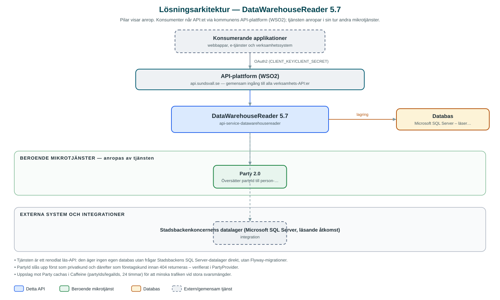

DataWarehouseReader
Läs-API mot Stadsbackenkoncernens datalager – kunder, avtal, anläggningar, fakturor och mätvärden för el, fjärrvärme, vatten och andra nyttigheter.
Om API:et
DataWarehouseReader ger kommunens applikationer ett enhetligt REST-gränssnitt mot Stadsbackenkoncernens datalager, där kund-, avtals- och förbrukningsdata från de kommunala bolagen samlas. I stället för att applikationer ansluter direkt till datalagret frågar de detta API, som hanterar behörigheter, paginering och identitetsöversättning.
API:et täcker flera datadomäner: kundengagemang och kunddetaljer, avtal, anläggningar (installations), installerad bas, fakturor med fakturadetaljer samt mätvärden. Mätvärdena kan hämtas per nyttighet – bredband, fjärrkyla, fjärrvärme, el, elhandel, avfall och vatten – och aggregeras på olika tidsupplösningar.
Personuppgifter skyddas genom att API:et arbetar med partyId i stället för person- och organisationsnummer: inkommande partyId översätts till legal-id via Party-tjänsten innan datalagret frågas, och svaren översätts tillbaka. Uppslagen cachas ett dygn för att minska trafiken mot Party.
Det här gör API:et
- Kundengagemang och kunddetaljer – Sökning av kunder och deras engagemang i de kommunala bolagen, med partyId som identifierare.
- Avtal – Paginerad sökning av avtal per kund, anläggning och nyttighet.
- Anläggningar och installerad bas – Uppgifter om anläggningar och installerad bas kopplade till kundernas engagemang.
- Fakturor – Fakturor med tillhörande fakturadetaljer och pdf-referenser ur datalagret.
- Mätvärden – Förbrukningsvärden per nyttighet (el, fjärrvärme, fjärrkyla, elhandel, vatten, avfall, bredband) med valbar aggregering.
- Skyddade identiteter – PartyId översätts till person-/organisationsnummer först vid frågan mot datalagret och tillbaka i svaret.
API-dokumentation
API:ets samtliga resurser, parametrar och datamodeller finns beskrivna i en OpenAPI-specifikation som är hämtad ur källkodsförrådet. Den kan utforskas interaktivt i Swagger UI eller laddas ner som YAML.
Teknisk dokumentation
Nedan beskrivs hur tjänsten är uppbyggd, vilka andra tjänster den anropar och vad som krävs för att driftsätta den. Informationen är härledd ur källkoden och dess konfiguration på GitHub.
Arkitektur

API:et är en mikrotjänst (Java 25, Spring Boot via kommunens gemensamma tjänsteplattform dept44 (8.0.8), byggd med Maven). Konsumenter når tjänsten via kommunens gemensamma API-plattform (WSO2) på api.sundsvall.se – tjänsten anropas aldrig direkt. Tjänsten anropar i sin tur andra mikrotjänster i kommunens tjänstelandskap. Lagring: Microsoft SQL Server – läser direkt ur Stadsbackens datalager (inga egna migrationer; schemat ägs av datalagret). Övriga integrationer som förekommer i koden: Stadsbackenkoncernens datalager (Microsoft SQL Server, läsande åtkomst).
Teknikstack
- Språk: Java 25
- Ramverk: Spring Boot via kommunens gemensamma tjänsteplattform dept44 (8.0.8), byggd med Maven
- Databas: Microsoft SQL Server – läser direkt ur Stadsbackens datalager (inga egna migrationer; schemat ägs av datalagret)
- Övrigt: JPA mot SQL Server med lagrade procedurer och JDBC-frågor, Caffeine-cache för Party-uppslag, Resilience4j circuit breaker mot Party
Beroenden till andra mikrotjänster
Tjänsten anropar följande mikrotjänster. Versionerna är hämtade ur källkodens integrationsklienter.
| Tjänst | Version | Användning |
|---|---|---|
| Party | 2.0 | Översätter partyId till person- eller organisationsnummer och tillbaka; provar privat- och företagskund i tur och ordning. |
Konfiguration och driftsättning
- SQL Server-anslutning till Stadsbackens datalager med utökad anslutningspool (upp till 50 anslutningar)
- URL och OAuth2-klientuppgifter (client credentials) för Party-integrationen
- Cache för party-/legal-id-uppslag: upp till 1000 poster i 24 timmar
- Anrop görs per kommun – municipalityId ingår i alla API-vägar
Noterbart ur källkoden
- Tjänsten är ett renodlat läs-API: den äger ingen egen databas utan frågar Stadsbackens SQL Server-datalager direkt, utan Flyway-migrationer.
- PartyId slås upp först som privatkund och därefter som företagskund innan 404 returneras – verifierat i PartyProvider.
- Uppslag mot Party cachas i Caffeine (partyIds/legalIds, 24 timmar) för att minska trafiken vid stora svarsmängder.
- Mätvärdeskategorierna mappas till datalagrets svenska benämningar (t.ex. ELECTRICITY ⇒ 'El', WASTE_MANAGEMENT ⇒ 'Avfallsvåg') i Category-enumen.
Källkod
Källkoden är öppen och finns hos Sundsvalls kommun på GitHub. I källkodsförrådet finns även instruktioner för att klona, konfigurera och starta tjänsten i egen miljö.